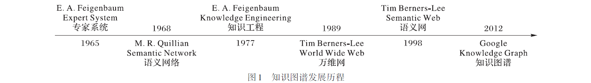

6. 描述逻辑的发展前景 — (a little peek)
当今描述逻辑通常被视作本体语言（Ontology language，用于构建本体的形式语言）的重要逻辑基础，基于描述逻辑的知识库现在多被称为本体知识库（Ontology Knowledge Base）。很有前景的趋势是将符号计算和深度学习结合的研究，例如概念学习（Concept Learning）。
6.1 传统路线
6.1.1 扩展 DLs ：集成其他逻辑
20 世纪末 21 世纪初：时态描述逻辑、模糊描述逻辑、分布式描述逻辑、动态描述逻辑、概率描述逻辑、分布式动态描述逻辑等众多结合。近几年：模糊空间描述逻辑 \(^{[8,2022]}\)、类比推理的描述逻辑 \(^{[9,2021]}\)、非分布式描述逻辑 \(^{[10,2023]}\)。
6.1.2 语义网的当代发展：知识图谱

将知识引入人工智能领域，推理算法主导转变为知识主导。
知识图谱架构。模式层：知识类的数据模式。数据层：具体的数据信息。
知识图谱一般是三元组 \(G = \{ E,R,F \}\) 。其中 \(E\) 表示实体集合，其中的元素指代客观存在并且能够相互区分的事物，可以是具体的人、事、物，也可以是抽象的概念。 \(R\) 中的元素是知识图谱中的边，表示不同实体间的某种联系。 \(F\) 表示事实的集合，每个事实是一个三元组 \((h,r,t)\) ，其中 \(h\) 和 \(t\) 分别指代事实中的头实体和尾实体，\(r\) 指代事实中的关系。一般有两种事实模式：(实体，关系，实体) 和（实体，属性，属性值）。事实可以表示为有向图，例如：


知识表示，知识存储，构建技术，知识推理
属性描述逻辑 \(\mathcal{ALCH}_@\)
\(\textsf{N}_\textsf{C}\) ： 概念名称的集合；\(\textsf{N}_\textsf{R}\) ： 作用名称的集合；\(\textsf{N}_\textsf{I}\) ： 个体名称的集合；\(\textsf{N}_\textsf{V}\) ： 变量的集合
\(\textbf{S}\) ：说明的集合，可以是如下表达式：
- 变量 \(X \in \textsf{N}_\textsf{V}\)
- 闭说明： \([a_1:v_1,\cdots,a_n:v_n]\)
- 开说明： \(\lfloor a_1:v_1,\cdots,a_n:v_n \rfloor\)
其中，\(a_i \in \textsf{N}_\textsf{I}\) ， \(v_i\) 要么 \(\textsf{N}_\textsf{I}\) 中的个体名称，要么是形如 \(X.c\) 的表达式，其中 \(X \in \textsf{N}_\textsf{V}\) ， \(c \in \textsf{N}_\textsf{I}\) 。
\(\textbf{R}\) ：关系的集合，包括所有形如 \(r@S\) 的表达式，其中 \(r \in \textsf{N}_\textsf{R}\) ，\(S \in \textbf{S}\) 。
\(\textbf{C}\) ：概念描述的集合
Example
\(ABox : \textrm{awarded}(\textrm{meitner}, \textrm{planck_medal}) @ [ \textrm{year}:1949, \textrm{loc}:\textrm{berlin} ]\)
记 \(\Phi^{\mathcal{I}} := \{\Sigma \subseteq \Delta^{\mathcal{I}} \times \Delta^{\mathcal{I}} |\ \Sigma 是有限集合 \}\) 为论域上的所有有限二元关系的集合。
任给变量指派 \(\mathcal{Z} : \textsf{N}_\textsf{V} \rightarrow \Phi^{\mathcal{I}}\) ，一个说明 \(S \in \textbf{S}\) 被解释到一个集合 \(S^{\mathcal{I},\mathcal{Z}} \subseteq \Phi^{\mathcal{I}}\) 。通过定义 \(X^{\mathcal{I},\mathcal{Z}} := \{\mathcal{Z}(X)\}, X \in \textsf{N}_\textsf{V}\) ，说明的语义定义为：
对于， \(A \in \textsf{N}_\textsf{C}, r \in \textsf{N}_\textsf{R}, S \in \textbf{S}\) ，定义: \((A@S)^{\mathcal{I},\mathcal{Z}} := \{ \delta \in \Delta^{\mathcal{I}}\ |\ (\delta, F)\in A^{\mathcal{I}} \textrm{ for some } F\in S^{\mathcal{I},\mathcal{Z}} \}\) \((r@S)^{\mathcal{I},\mathcal{Z}} := \{ (\delta,\epsilon) \in \Delta^{\mathcal{I}} \times \Delta^{\mathcal{I}}\ |\ (\delta,\epsilon, F)\in r^{\mathcal{I}} \textrm{ for some } F\in S^{\mathcal{I},\mathcal{Z}} \}\)
Question
如何在超图上扩展描述逻辑？

6.2 新生路线
6.2.1 符合主义和联结主义的结合：概念学习
传统的深度学习，将数据表示为高维度向量，有利于计算机处理，但是是人类不可读的。例如在 ChatGPT 中，词向量空间是一个 768 维的空间，每个词语都可以在这个空间中表示为一个 768 维的向量，人类很难读懂一个向量是如何和词建立联系的。
描述逻辑提供了一种解决的可能，将计算机形成的语言表征和概念系统联系起来，形成概念学习，如下图所示。DLs 提供了人类和计算机均可读的本体知识库，利用 DLs 被认为是实现可解释人工智能（AI）的方法之一。

定义好的初始 DLs 提供了类和实例，可以供神经网络学习，然后在接受新的实例时，根据习得的模型进行分类（类抽象），或者在接受到外部反馈时进行纠正。
6.2.2 智能机器人上的应用：自动规划和调度 \(^{[7]}\)
自动规划和调度（Automated planning and scheduling）是人工智能的一个分支，涉及策略或行动序列的实现。机器人需要对环境具有复杂的知识，以处理任务或执行行动。知识表示和推理（KR＆R）技术提供了这种程度的知识，以感知任务环境。这些技术包括描述逻辑（DL）和基于本体的方法 。
参考文献
- [7] A. N. Krishna et al. (eds.), Integrated Intelligent Computing, Communication and Security, Studies in Computational Intelligence 771
- [8] Cheng, H., Ma, Z. & Li, P. A fuzzy spatial description logic for the semantic web. J Ambient Intell Human Comput 13, 4991–5009 (2022). https://doi.org/10.1007/s12652-020-01864-9
- [9] Steven Schockaert, Yazmín Ibáñez-García, Víctor Gutiérrez-Basulto, A Description Logic for Analogical Reasoning. https://doi.org/10.48550/arXiv.2105.04620
- [10] R. Ramanayake and J. Urban (Eds.): TABLEAUX 2023, LNAI 14278, pp. 49–69, 2023. https://doi.org/10.1007/978-3-031-43513-3_4